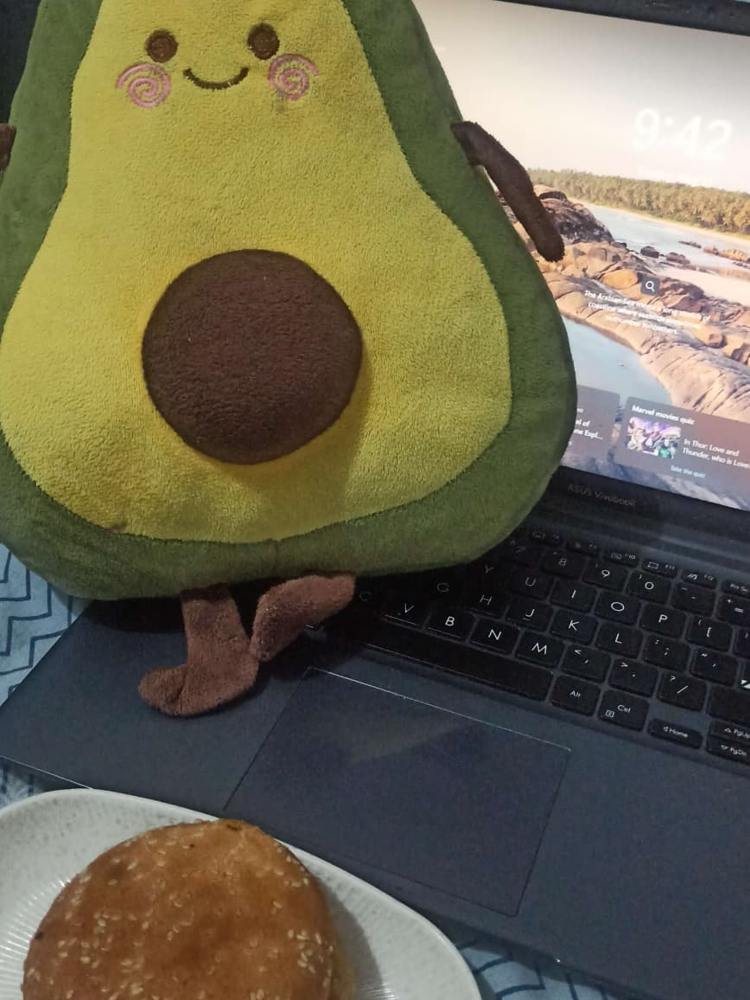
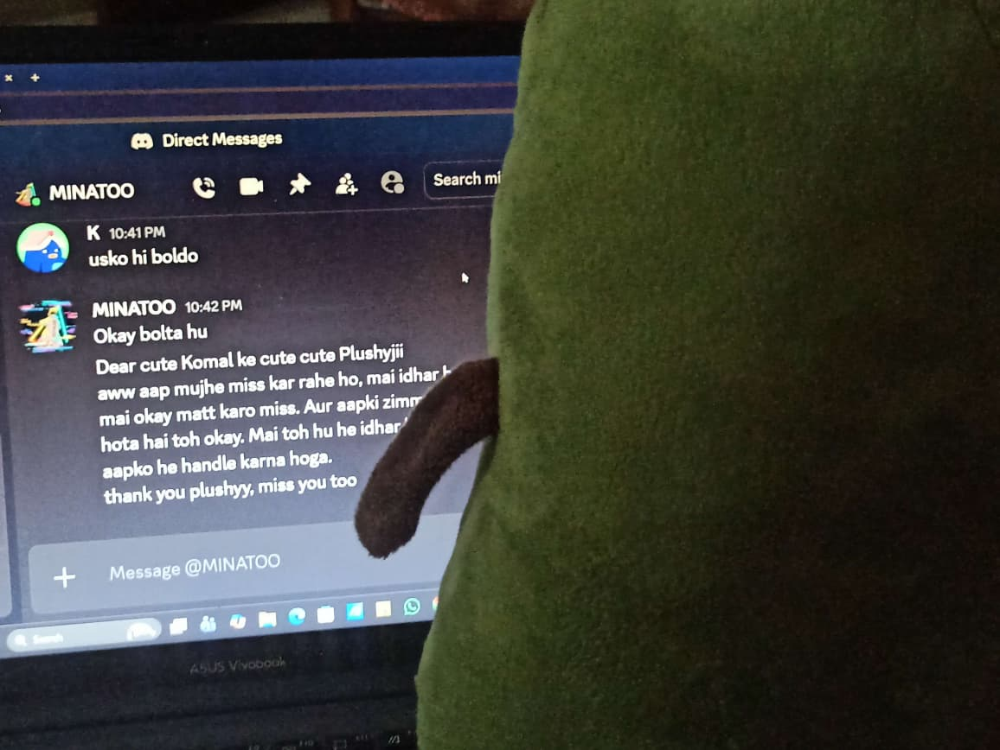
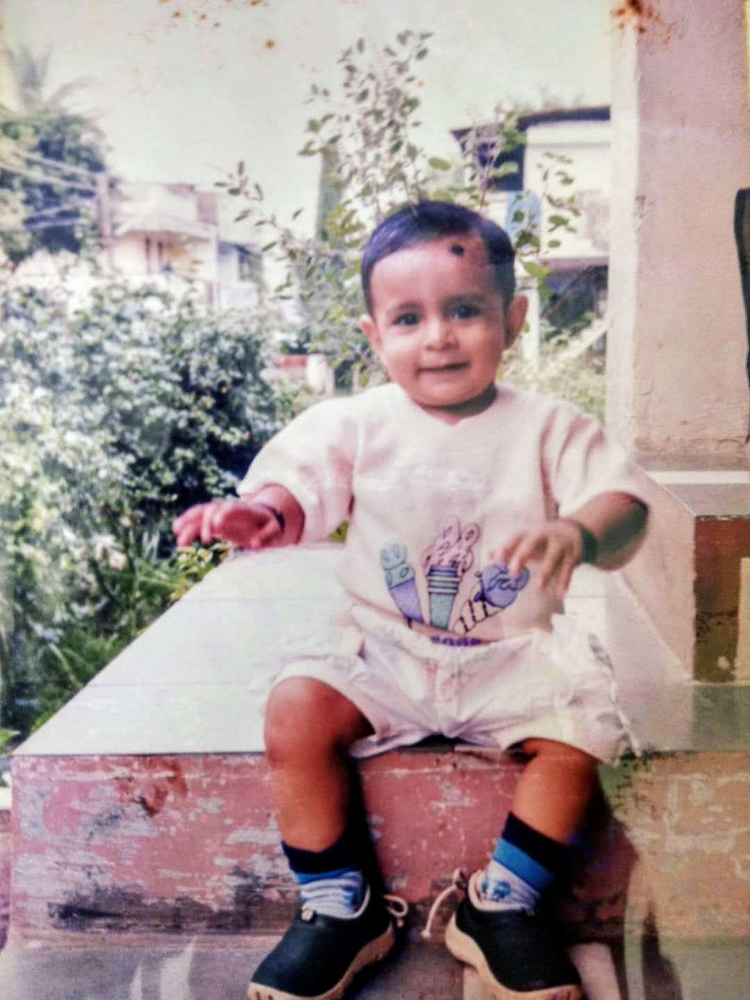
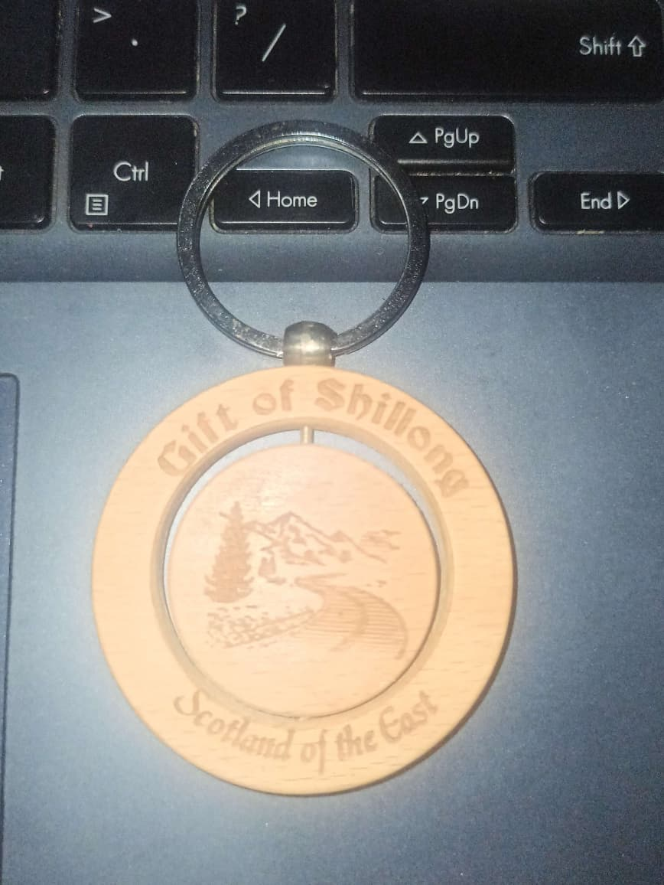
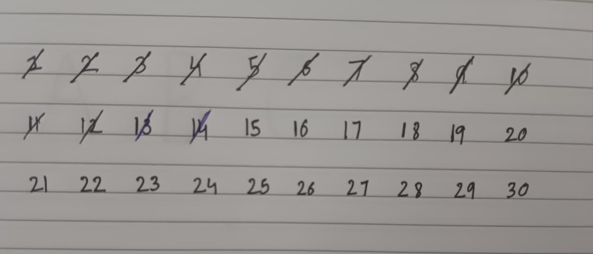
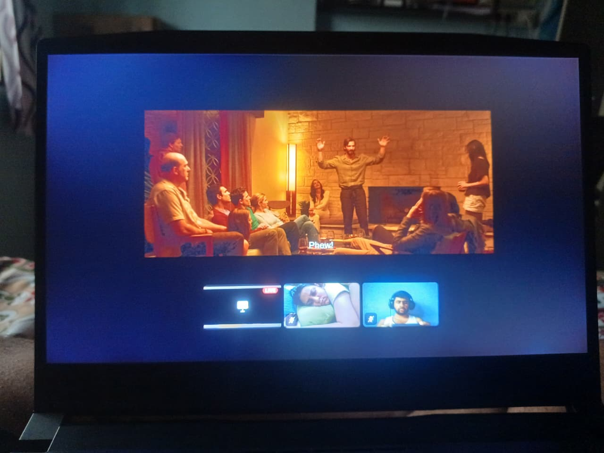

I know I hurt you. I know some things take time to heal.
This isn't meant to replace an apology or erase what happened.
It's just my way of showing that even after everything, you still matter to me.
A small archive of moments, memories, and things I never wanted to forget.
I miss you
Everything is so much better when you're near
You matter to me. Not just the big things. The tiny details too. The random things you probably don't even remember telling me.
You, Me, Moments
Treasure between us






Favorites
Things you love
Little moments
Things I remember
Timeline
Moments saved
Dreams
Dreams, goals, and little pieces of you
💗
You Matter
More of K which M remembers and a very M way to present it:)